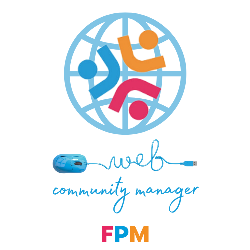

Monumento 01
Teatro Romano
Uno dei monumenti storici e archeologici più rilevanti dell'antica Albintimilium, preziosa testimonianza risalente a cavallo tra il II e il III secolo d.C.
Apri Documento Canva ↗Progetto Didattico · Classe 1° Q

Indirizzo Web Community Manager - Plesso Marco Polo. Un percorso interattivo alla scoperta e valorizzazione delle meraviglie storico-culturali di Ventimiglia.
Esplora il TerritorioIl nostro obiettivo primario consiste nell'analizzare e comprendere a fondo il territorio cittadino attraverso la sua ricca evoluzione storica, spaziando dall'era di Cro Magnon fino al Medioevo. Ci focalizziamo sulla promozione attiva del patrimonio archeologico di Albintimilium e del centro storico, esaltando con passione le testimonianze dell'epoca romana e medievale.
Uno dei monumenti storici e archeologici più rilevanti dell'antica Albintimilium, preziosa testimonianza risalente a cavallo tra il II e il III secolo d.C.
Apri Documento Canva ↗
Celeberrimo parco botanico situato sul promontorio della Mortola. Raccoglie migliaia di specie botaniche esotiche provenienti da ogni angolo del mondo.
Esplora Risorse
Sito archeologico preistorico di fama mondiale a ridosso del confine di Stato. Le caverne calcaree hanno restituito reperti fondamentali del Paleolitico.
Visualizza Ricerca
Il cuore spirituale e architettonico della città alta. Uno spettacolare esempio di architettura romanica che domina l'intero borgo antico.
Scopri la Storia
Fortezza ottocentesca arroccata a strapiombo sulla costa, oggi sede del rinomato Museo Civico Archeologico "Girolamo Rossi".
Info e Orari
Un'antica torre-porta medievale a doppia arcata che attraversa la suggestiva e storica via Julia Augusta.
Dettagli Struttura
L'area archeologica della città romana, che conserva oltre al teatro anche antichi complessi termali, insule e porzioni di mura.
Mappa degli Scavi
Luogo di culto dell'XI secolo edificato sui resti di un antico tempio pagano, celebre per le colonne realizzate riutilizzando pietre miliari romane.
Approfondisci
Una splendida oasi naturale caratterizzata da sabbia finissima e acque cristalline, raggiungibile tramite un suggestivo sentiero a picco sul mare.
Guida al Sentiero
Uno scrigno medievale intatto, strutturato in carruggi, piazzette storiche, imponenti fortificazioni e antichi palazzi nobiliari liguri.
Mappa Interattiva